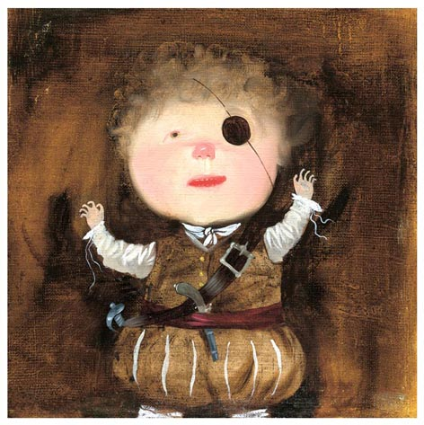
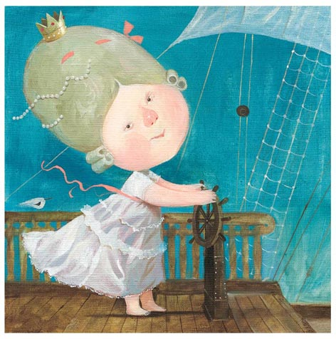
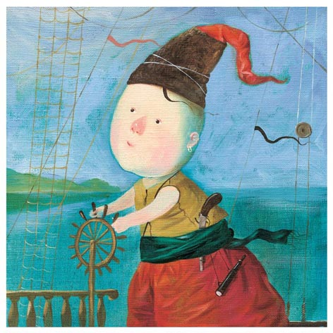
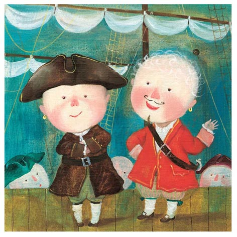

Breezko
CSS3/Javascript concept for thumbnails previewing, images carousels, etc.

- 

- 
- 
- 
Breezko is library agnostic plugin, written with pure javascript, that allows previewing or navigation
through items using CSS3 transitions and transforms. Every next elements just flyes away out of screen, and
coming back in the next loop.
To set-up, it only needs to follow simple pattern:
<ul class="container" id="breeze" onclick='breezKo.next()'>
<li><img src="images/pic.jpg" alt=""></li>
<li><img src="images/pic.jpg" alt=""></li>
...
<li><img src="images/pic.jpg" alt=""></li>
</ul>
Above is the initial required structure – few elements wrapped with ul. Place any content
you want inside li. The container will need to be passed to the Breezko function like so:
var breezKo = new window.Breezko(document.getElementById('breeze'));
Breezko function can take an optional second element - an object with key/value settings, with following options available:
defaults:{
// default transition speed in ms
speed:500,
// enables auto slideshow, and sets delay between animations
delay: 500,
// max and min values for rotation and translate options
limits:{
'rotateX':[100, 100],
'rotateY':[-10, 10],
'rotateZ':[-10, 10],
'translateX':[-400, 400],
'translateY':[-300, 300],
'translateZ':[350, 500]
}
}
Breezko API:
next()
prev()
start(delay)
stop()
Sample usage:
<button class="btn" onclick='breezKo.start(500)'> <button class="btn" onclick='breezKo.stop()'> <button class="btn" onclick='breezKo.prev()'> <button class="btn" onclick='breezKo.next()'>